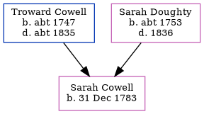

Sarah Elizabeth Cowell 1783 -
[ Home ] | [ Calendar ] | [ Surnames Index ] | [ Family History ]The 5th of 7 children of Troward Cowell and Sarah Doughty, Sarah Cowell, the four times great-aunt of <a href="I1.html">Nigel Horne</a>, was born in Margate, Kent, England on Dec 31, 1783<span class="citation">1,2</span> and baptized there at St John the Baptist Church on Feb 22, 1784. In 1841, she lived at her birthplace<span class="citation">1</span>.
Parents
- Troward was born c. 1747
- Sarah was born c. 1753
Citations
- 1841 England Census Online publication - Provo, UT, USA: The Generations Network, Inc., 2006.Original data - Census Returns of England and Wales, 1841. Kew, Surrey, England: The National Archives of the UK (TNA): Public Record Office (PRO), 1841. Data imaged from the National
- Kent, Canterbury Archdeaconry Baptisms - Findmypast
Media
Canterbury Baptisms - GBPRS/CANT/B/96208612
England Births & Baptisms 1538-1975 - R_885508992
Family Tree
Generated by Ged2Site. Last updated on Jul 20, 2025